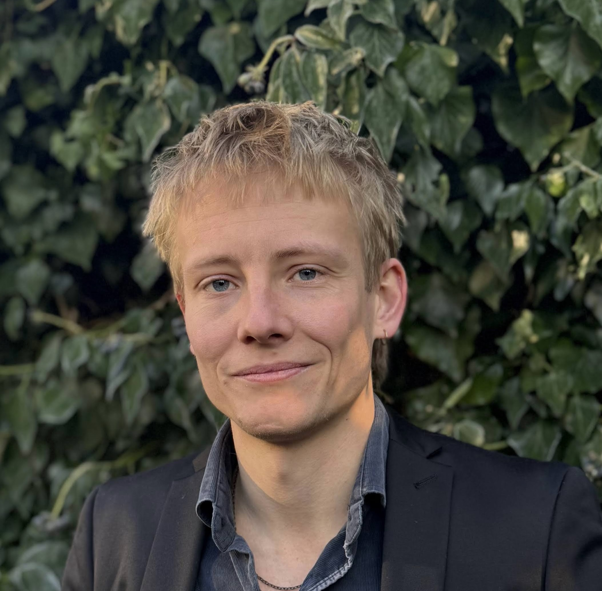

David Rischel
I am a Postdoctoral Research Fellow at the Normative Orders Research Centre, Goethe University Frankfurt. My work sits at the intersection of territorial rights, legitimacy, and distributive justice.
My research addresses questions about territory: who has the right to control particular pieces of the earth, and on what terms. I approach these through analytic political philosophy, drawing on theories of distributive justice, political legitimacy, and Georgist political economy. I also have a growing interest in democratic theory.
Before Frankfurt, I completed my PhD at the University of Warwick (Politics and International Studies) and held a visiting research fellowship at the Norwegian Nobel Institute. I have also taught at Queen Mary University of London.
Research
My work is organised around three connected questions: what justifies the authority of institutions to rule within their borders; what principles ought to govern the distribution of land and its benefits; and what, if anything, constitutes the intrinsic value of democracy.
Jurisdiction
This strand of my research addresses the question of what gives institutions — such as states — the right to rule within their borders: the question of jurisdiction. I aim to defend a functionalist or instrumentalist account. On such a view, what matters about living under state institutions is that they protect our rights, realise justice and freedom, and are democratic. My work here is concerned with spelling out the details of such a view, and with addressing some important objections — in particular, the worry that functionalism licenses so-called benign annexations: the absorption of a less-well-governed territory into an even better-governed one.
Territorial justice
Much contemporary work on territorial justice assumes or argues that land is a special type of good requiring its own distributive principle. I argue against this view, proposing instead an integrationist account, on which land is treated as continuous with the broader domain of distributive justice. Whatever metric of justice one favours — resources, welfare, capabilities — land should be subject to it. This has implications for long-running debates about land taxation and property rights.
I aim to connect this work to questions in environmental justice around resource extraction and rewilding, and to the ongoing housing crisis — since booming housing prices are, to a very large extent, explained by rising land values.
Democratic theory
A central question in democratic theory concerns the intrinsic value of democracy: why, apart from its instrumental benefits, is democracy a good thing? One explanation appeals to citizens' interest in democratic autonomy — the idea that it is valuable for citizens to be the authors of the institutions that rule them, and that democracy is central to realising this interest. One strand of my work interrogates this ideal. It also connects to my work on jurisdiction, insofar as autonomy is a popular justification for the claim that peoples have a right to collective self-determination.
I aim to broaden this work in several directions — in particular, investigating questions relating to the conduct of professional politicians within democracies: whether politicians ought to act as delegates for their voters or as representatives, and when politicians are required to speak out against unjust policies rather than work within the system to change them.
Publications
Journal articles
Under review
In preparation
Dissertation
Public philosophy
I have written essays for a public-facing audience (in Danish) on topics such as the climate crisis, technology, and degrowth. These can be found at raeson.dk.
Curriculum Vitae
Employment
Education
Teaching
Areas of specialisation and competence
Awards and prizes
Presentations (selected)
Languages
Last updated June 2026